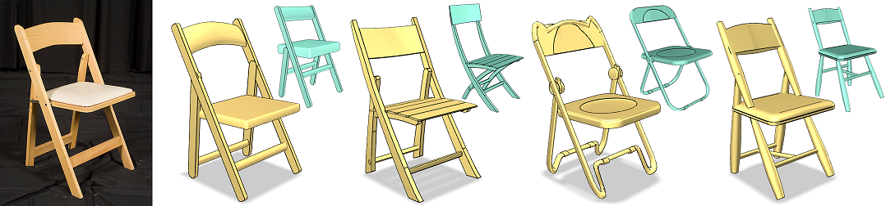
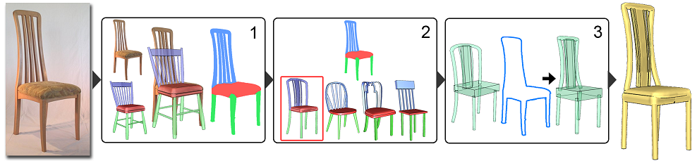
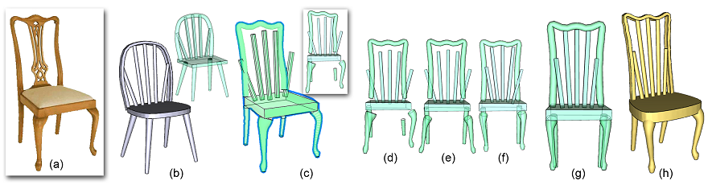
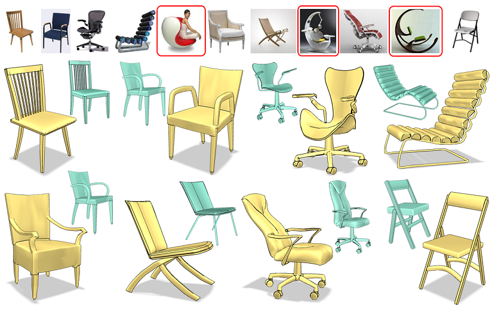
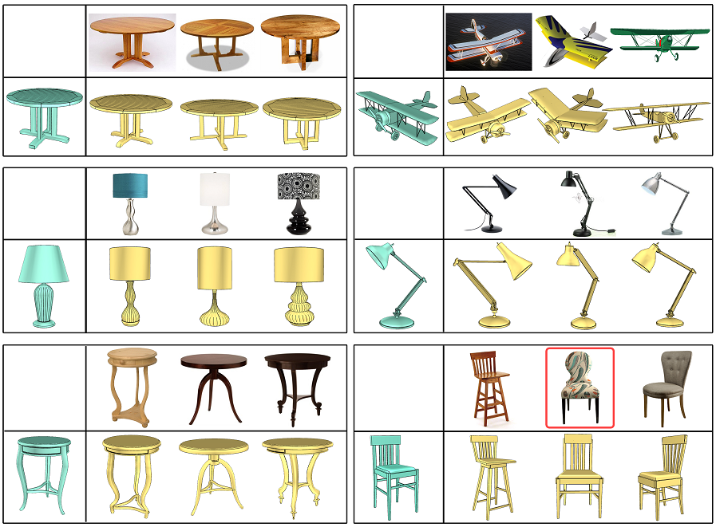
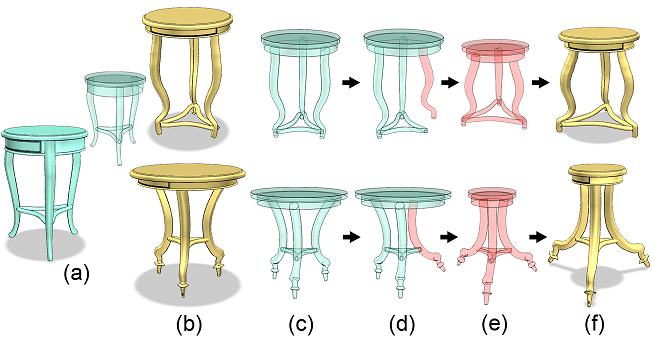

Photo-Inspired Model-Driven 3D
Object Modeling
Kai Xu1,2,
Hanlin Zheng3, Hao Zhang2, Daniel Cohen-Or4,
Ligang Liu3, Yueshan Xiong1
1National Univ. of
Defense Technology, 2Simon Fraser Univ., 3Zhejiang
Univ., 4Tel Aviv Univ.
ACM Transactions
on Graphics (SIGGRAPH 2011), 30(4)

Figure 1: Photo-inspired
3D modeling of a chair from four different 3D candidates
(cyan). The new models (yellow) are created as geometric variations of
the candidates to fit the target object in the photo while preserving
the 3D structure of the candidates.
|
Abstract
|
We
introduce an algorithm for 3D object modeling where the user draws
creative inspiration from an object captured in a single photograph.
Our method leverages the rich source of photographs for creative 3D
modeling. However, with only a photo as a guide, creating a 3D model
from scratch is a daunting task. We support the modeling process by
utilizing an available set of 3D candidate models. Specifically, the
user creates a digital 3D model as a geometric variation from a 3D
candidate. Our modeling technique consists of two major steps. The
first step is a user-guided image-space object segmentation to reveal
the structure of the photographed object. The core step is the second
one, in which a 3D candidate is automatically deformed to fit the
photographed target under the guidance of silhouette correspondence.
The set of candidate models have been pre-analyzed to possess useful
high-level structural information, which is heavily utilized in both
steps to compensate for the ill-posedness of the analysis and modeling
problems based only on content in a single image. Equally important,
the structural information is preserved by the geometric variation so
that the final product is coherent with its inherited structural
information readily usable for subsequent model refinement or
processing.
|
|
|
Paper |
|
|
|
Slides |
|
|
|
Video |
|
|
|
| Images |

Figure
2: Algorithm overview. Given a single input
photograph, a model-driven approach is applied to obtain a labeled
segmentation of the photographed object (step 1). The candidate to be
deformed can be randomly chosen or retrieved from the candidate set
(step 2). The chosen candidate is deformed to achieve a fit in the
silhouettes while preserving its structure (step 3).

Figure
3:
One iteration step of controller optimization when deforming a 3D
candidate (b) to fit a photo (a). The result of reconstructing external
controllers (c), though fitting well to the photo silhouette, violates
the inherent structure of the candidate, e.g., proximity and symmetry
(see insert) between the controllers. We first symmetrize the
individual controllers (d) and then optimize the structure using
symmetry (e) and proximity constraints (f). The final controllers are
well structured (g) and the underlying geometry is deformed accordingly
(h).

Figure
4: The
"Google chair challenge": modeling chairs after Google image search
returns on “chair”. Top row lists the top 11 returned images from the
search. We are unable to model objects contained in the images marked
by red boxes. 3D models created from other photos (yellow) are shown
below where the candidates were retrieved from the database.

Figure
5:
A gallery of 3D model creations for different object classes and from
varying photographic inspirations. In each case, one 3D candidate is
deformed to fit three photographed objects. Note that the model created
out of the marked chair photo does not match well the image silhouette
since its cuboid controllers are not allowed to bend. The 3D candidate
was chosen randomly from the chair set.

Figure
6:
The structure-preserving deformation retains the structural information
in the candidate so that the produced variation (b) remains readily
usable. Based on the structural information (c), the user can perform
further editing (d-f) using the structure-preserving shape manipulation
of [Zheng et al. 2011].
|
|
|
| Thanks |
We
first thank the anonymous reviewers for their valuable comments and
suggestions. We are grateful to the authors of [Zheng et al. 2011] for
sharing an early manuscript of their work. Thanks also go to Aiping
Wang
from NUDT for fruitful discussion. This work is supported in part by
grants from NSERC (No. 611370), a research fund for the Doctoral
Program of Higher Education of China (No. 20104307110003), the Israeli
Ministry of Science, the Israel Science Foundation, the National
Science Foundation of China (61070071), and the 973 National
Key Basic Research Foundation of China (No. 2009CB320801).
|
|
|
| Bibtex |
@article
{xu_sig11,
title = {Photo-Inspired Model-Driven 3D Object
Modeling},
author
= {Kai Xu and Hanlin Zheng and Hao Zhang and Daniel Cohen-Or and
Ligang Liu and Yueshan Xiong}
journal
= {ACM Transactions on Graphics, (Proc. of SIGGRAPH 2011)},
volume
= {30},
number
= {4},
pages
= {80:1--80:10},
year
= {2011}
}
|
 
|